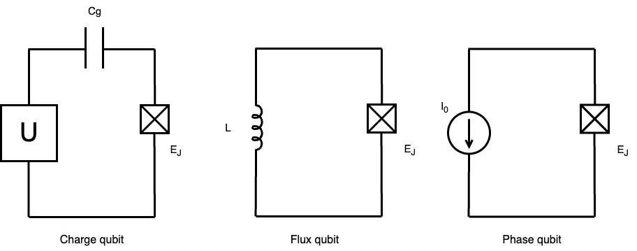

A quantum computer is a machine built on the principles of quantum mechanics to perform computations. The concept of quantum computing was first proposed by Richard Feynman, who recognized that a quantum computer could effectively simulate the behaviour of quantum systems - a task that classical computers struggle with. Feynman's idea arose from the inherent difficulties classical computers faced in modeling complex quantum phenomena. As researchers attempted to simulate increasingly intricate quantum systems, the limitations of classical computers became apparent. Feynman suggested that a quantum computer, leveraging the unique properties of quantum mechanics, could perform these simulations more efficiently. His proposal laid the foundation for the field of quantum computing.
Since then, various type of quantum computers have been developed, and researchers continue to explore the potential of quantum computing by designing quantum algorithms that can solve certain problems faster than classical ones. The pursuit of practical quantum computing is driven by its potential impact on fields such as optimization, chemistry, biology, cryptography, and beyond.
DiVincenzo Criteria
DiVincenzo Criteria outlined five essential criteria for implementing quantum computation in 2000 [1]. These criteria provide a framework for the implementation of quantum information processing and ensure for reliable quantum computation. Two additional criteria (6 and 7) are used for quantum communication.
A qubit is a fundamental block of quantum computing, representing a quantum two-level system that can exist two states (denoted as |0> and |1>). These states can correspond to different physical systems, such as two spin states of a spin 1/2 particle, or the ground and excited states of an atom. These qubits are well-defined, so it means that their states can be precisely controlled and measured. These precise control is key for ensuring the qubit behaves predictably in a quantum system.
It is important to initialize the qubits to a specific state before executing quantum computations. This initialization typically sets all qubits to the state |0>, creating a well-defined starting point. It ensures that the quantum algorithm begins with a clean state.
Quantum computers can be categorized into different types based on the physical qubits they utilize. The most common types include superconducting quantum computers, trapped-ion quantum computers, semiconductor quantum computers, topological quantum computers, photonic quantum computers, and quantum annealers.
1.2.1 Superconducting Quantum Computers
Superconducting quantum computers rely on superconducting circuits to manipulate quantum bits. It utilizes superconducting materials, which exhibit zero electrical resistance at a temperature around absolute zero. Superconducting qubits are typically created using devices called Josephson Junctions, which are key components in quantum computers. Quantum bits can be prepared by Josephson Junctions. The Josephson Junction is a device in superconductivity that consists of two superconductors separated by a thin insulating or non-superconducting barrier. The key feature of the Josephson Junction is to allow supercurrent to flow across the barrier. The quantum phenomenon can be observed in Josephson junctions.
Josephson Junctions
A Josephson Junction consists of two superconductors separated by a thin insulating or non-superconducting barrier. The unique property of this junction is that it allows a supercurrent to flow across the barrier without any voltage applied. This quantum phenomenon is essential for the function of superconducting qubits.
Types of superconducting qubits
There are three types of superconducting quantum qubits, charge qubit, flux qubit, and phase qubit, where U represents a voltage, Cg represents a capacitance, L represents an inductance, \(I_{0}\) represents a current, and \(E_{J}\) represents a Josephson junction.
1. Charge Qubits
2. Flux Qubits
3. Phase Qubits
Advantages of superconducting qubits
Challenges of Superconducting Qubits
Email: tankzhang19@gmail.com
LinkedIn: linkedin.com/in/zhang-hongfeng-176122270/